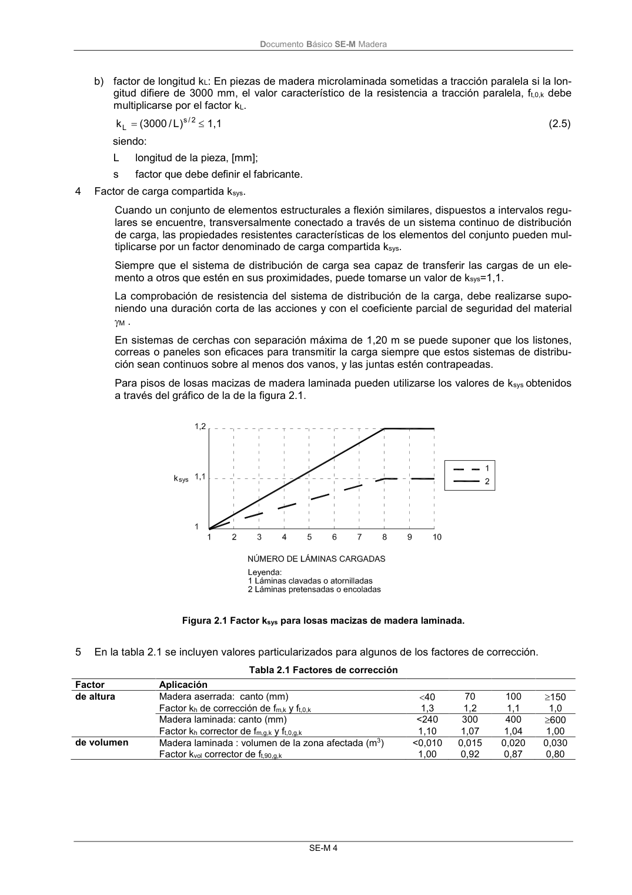

DB-SE-M · Página 10 · versión 2019-12-20
SHA256: 26b5819839ebfda78b0b119c5e76a0a37773b0d763c05688541870075df93718 · página física 10 de 132 · métodos de encabezado
solo si están cotejados.
Formatos: Markdown · JSON de bloques · PDF p. 10 · imagen PNG
Documento Básico SE-M Madera SE-M 4 b) factor de longitud kL: En piezas de madera microlaminada sometidas a tracción paralela si la lon- gitud difiere de 3000 mm, el valor característico de la resistencia a tracción paralela, ft,0,k debe multiplicarse por el factor kL. 2 / s L ) L / 3000 ( k 1,1 (2.5) siendo: L longitud de la pieza, [mm]; s factor que debe definir el fabricante. 4 Factor de carga compartida ksys. Cuando un conjunto de elementos estructurales a flexión similares, dispuestos a intervalos regu- lares se encuentre, transversalmente conectado a través de un sistema continuo de distribución de carga, las propiedades resistentes características de los elementos del conjunto pueden mul- tiplicarse por un factor denominado de carga compartida ksys. Siempre que el sistema de distribución de carga sea capaz de transferir las cargas de un ele- mento a otros que estén en sus proximidades, puede tomarse un valor de ksys=1,1. La comprobación de resistencia del sistema de distribución de la carga, debe realizarse supo- niendo una duración corta de las acciones y con el coeficiente parcial de seguridad del material M . En sistemas de cerchas con separación máxima de 1,20 m se puede suponer que los listones, correas o paneles son eficaces para transmitir la carga siempre que estos sistemas de distribu- ción sean continuos sobre al menos dos vanos, y las juntas estén contrapeadas. Para pisos de losas macizas de madera laminada pueden utilizarse los valores de ksys obtenidos a través del gráfico de la de la figura 2.1. Figura 2.1 Factor ksys para losas macizas de madera laminada. 5 En la tabla 2.1 se incluyen valores particularizados para algunos de los factores de corrección. Tabla 2.1 Factores de corrección Factor Aplicación de altura Madera aserrada: canto (mm) 40 70 100 150 Factor kh de corrección de fm,k y ft,0,k 1,3 1,2 1,1 1,0 Madera laminada: canto (mm) <240 300 400 600 Factor kh corrector de fm,g,k y ft,0,g,k 1,10 1,07 1,04 1,00 de volumen Madera laminada : volumen de la zona afectada (m3) <0,010 0,015 0,020 0,030 Factor kvol corrector de ft,90,g,k 1,00 0,92 0,87 0,80
